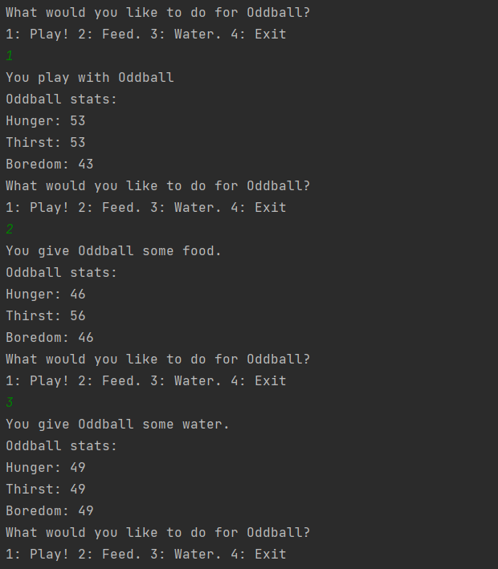
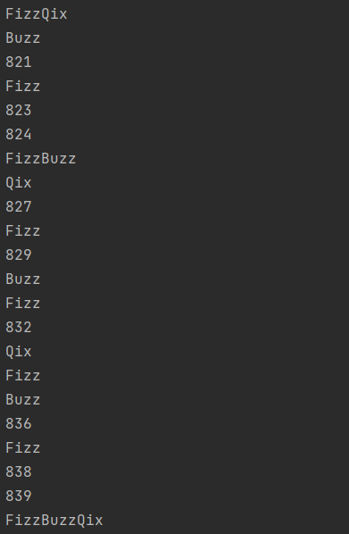

Phone: (765)267-8333
Email: william.fairfield.47933@gmail.com
My name is William Fairfield. I currently live in Crawfordsville Indiana. My skills and interests are extremely varried. I am currently studying to become a full stack java developer. I am proficient in Java, JavaScript, HTML, CSS, and more! Some of the things that I like to do in my free time include riding my motorcycle, playing video games, and collecting geodes.
Track and take care of one or more virtual pets. Choose between three game modes including a single pet, a pet shelter, or an expanded pet shelter. Perform upkeep based on a number of pet needs.
The classic FizzBuzz activity with a Qix twist. Given a number, the application will run a function that returns a FizzBuzzQixed String on every number up to the given number. If a number is divisible by 3, the output will contain Fizz. A number divisible by 5's output includes Buzz, and if a number is divisible by 7 the output contains Qix. I built this code to be expandable, so adding a word for a number divisible by another prime would be quite simple.
project 3 description
project 4 description